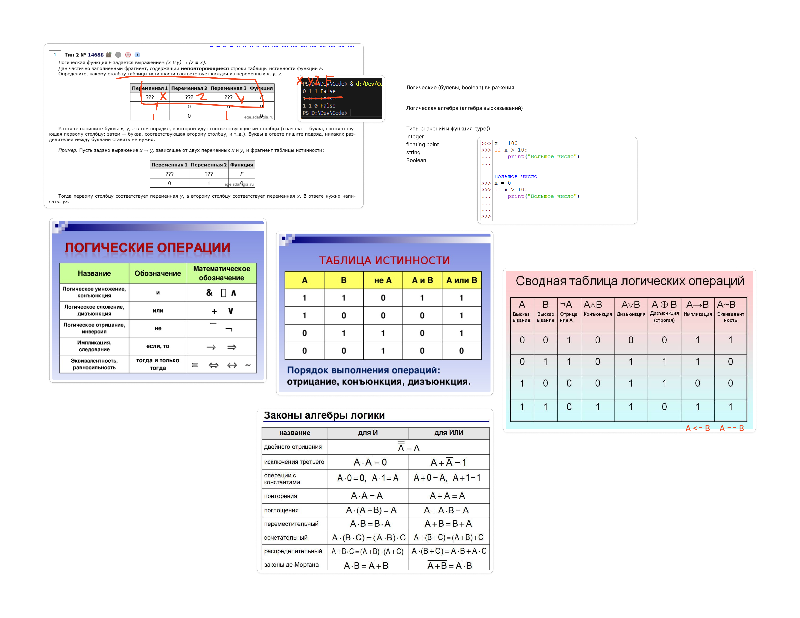

Решали Задание 2
Задание можно решить логически - путем рассуждений, либо написать программу.
Решение при помощи Python:
# F задаётся выражением (x ∨ y) → (z ≡ x)
# берём все возможные значения x
for x in 0, 1:
# берём все возможные значения y
for y in 0, 1:
# берём все возможные значения z
for z in 0, 1:
# переписали функциию из задания по правилам Python
# и считаем её значение при данных значениях x, y, z
F = (x or y) <= (z == x)
# нам нужны только значения, при которых F == 0
if F == 0:
# выводим значения x, y, z
print(x, y, z, F)

0 — ложь (False)1 — истина (True)| Операция | Обозначение | Описание | Пример |
|---|---|---|---|
| НЕ | ¬A или !A |
Отрицание (инверсия) | ¬1 = 0 |
| И | A ∧ B или A & B |
Конъюнкция (логическое И) | 1 ∧ 0 = 0 |
| ИЛИ | A ∨ B или `A |
B` | Дизъюнкция (логическое ИЛИ) |
| ИСКЛЮЧАЮЩЕЕ ИЛИ | A ⊕ B или A ^ B |
Исключающее ИЛИ (XOR) | 1 ⊕ 1 = 0 |
| ИМПЛИКАЦИЯ | A → B |
Если A, то B | 1 → 0 = 0 |
| ЭКВИВАЛЕНТНОСТЬ | A ≡ B |
Равносильность | 1 ≡ 1 = 1 |
| A | B | A ∧ B |
|---|---|---|
| 0 | 0 | 0 |
| 0 | 1 | 0 |
| 1 | 0 | 0 |
| 1 | 1 | 1 |
| A | B | A ∨ B |
|---|---|---|
| 0 | 0 | 0 |
| 0 | 1 | 1 |
| 1 | 0 | 1 |
| 1 | 1 | 1 |
| A | B | A → B |
|---|---|---|
| 0 | 0 | 1 |
| 0 | 1 | 1 |
| 1 | 0 | 0 |
| 1 | 1 | 1 |
| A | B | A ⊕ B |
|---|---|---|
| 0 | 0 | 0 |
| 0 | 1 | 1 |
| 1 | 0 | 1 |
| 1 | 1 | 0 |
¬)∧)∨)→)≡)A → B эквивалентно ¬A ∨ BA ≡ B эквивалентно (A ∧ B) ∨ (¬A ∧ ¬B)| A | B | A ∨ B | ¬(A ∨ B) |
|---|---|---|---|
| 0 | 0 | 0 | 1 |
| 0 | 1 | 1 | 0 |
| 1 | 0 | 1 | 0 |
| 1 | 1 | 1 | 0 |
📝 Советы по решению задач:
Удачи!